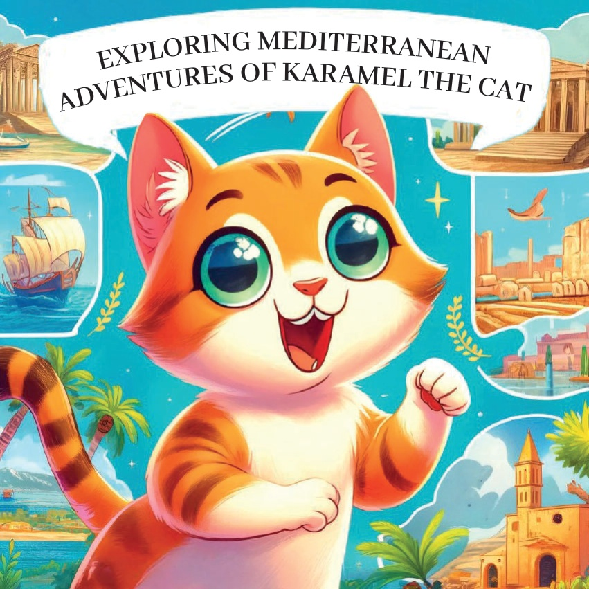
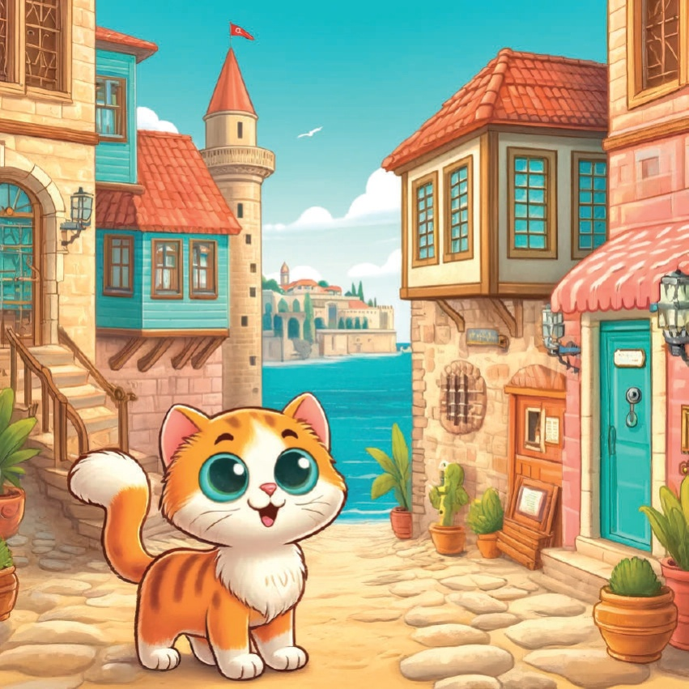
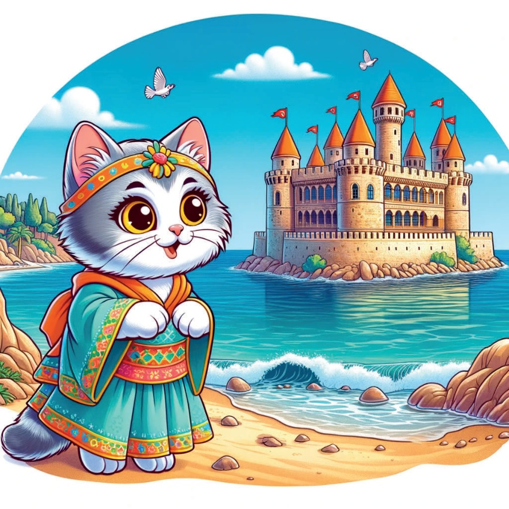
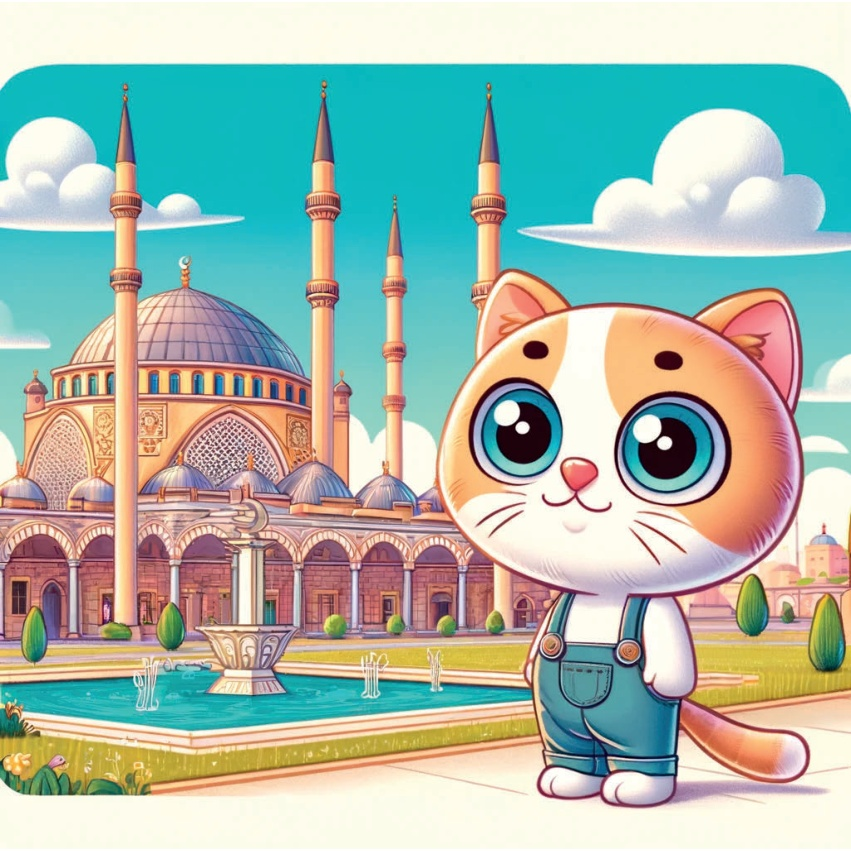
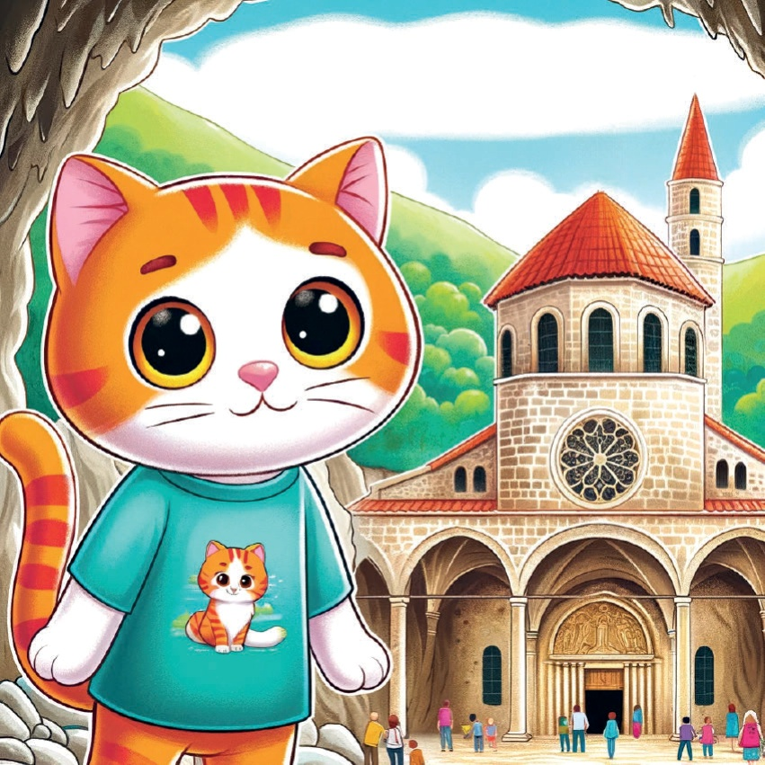
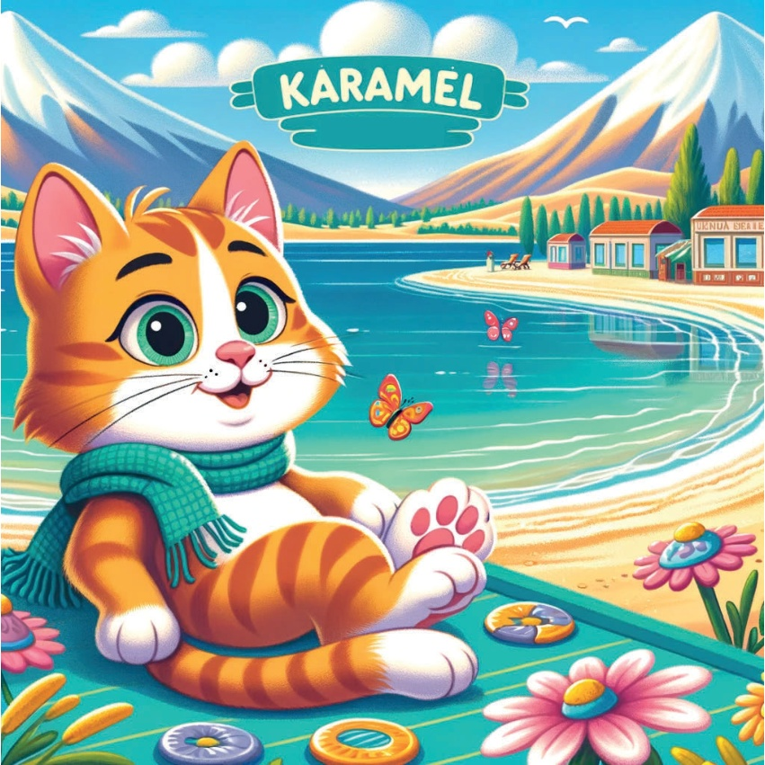
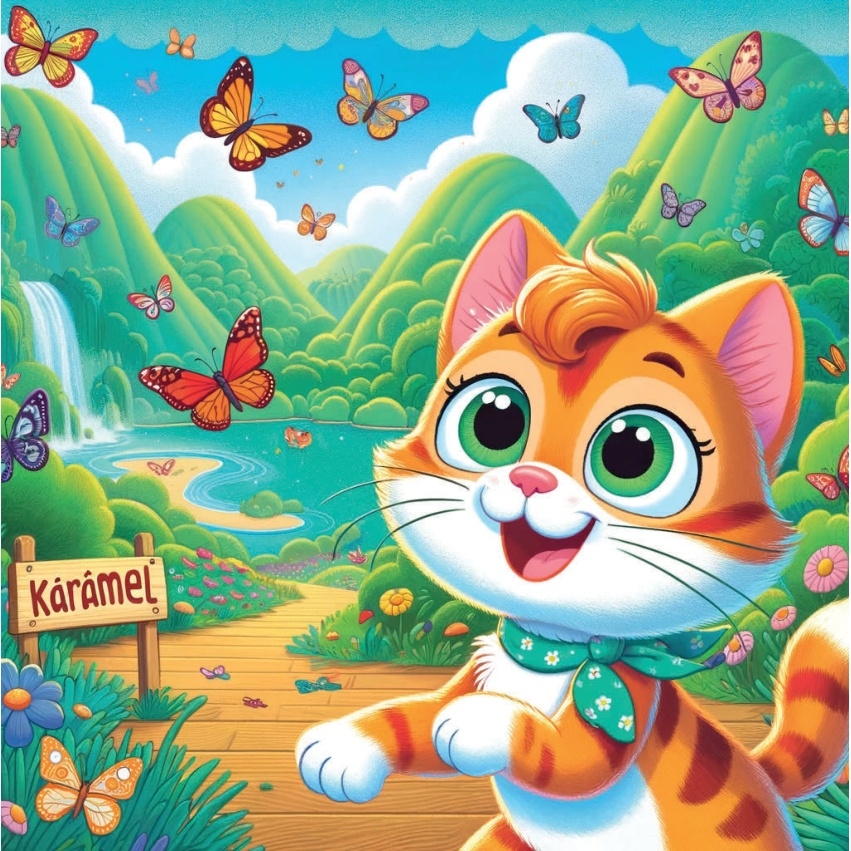
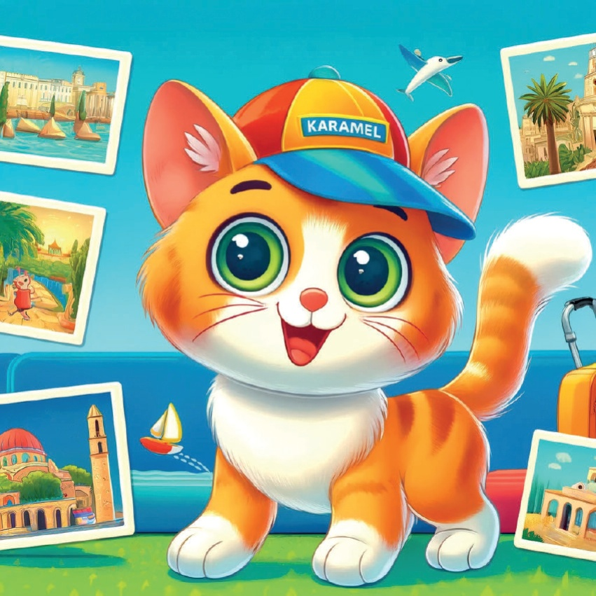
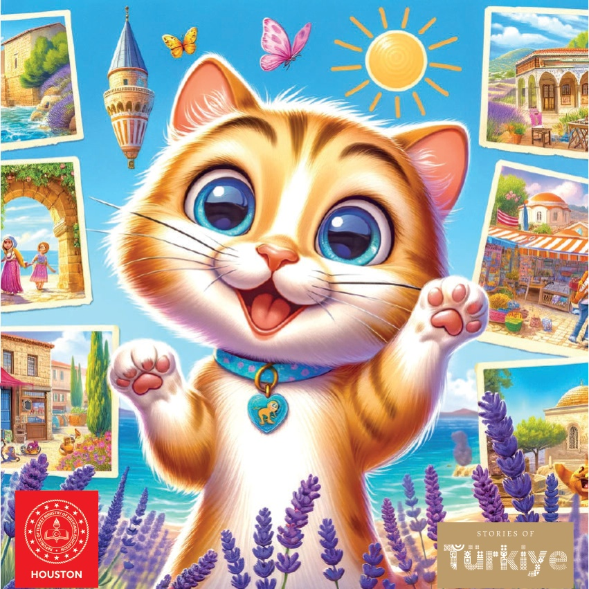

1

2

3
옛날 옛날 아주 먼 옛날, 카라멜이라는 호기심 많은 아기 고양이가 있었어요. 카라멜은 여러 곳을 탐험하는 것을 아주 좋아했습니다. 어느 날, 그녀는 터키의 지중해 지역을 여행하기로 결심했어요. 그곳의 특별한 문화, 역사와 아름다운 자연에 대해 배우고 싶었거든요.
4
5
안탈리아: 칼레이치 구시가지 카라멜의 첫 번째 목적지는 안탈리아였습니다. 그녀는 칼레이치 구시가지의 아름다운 길들을 거닐었습니다. 역사적인 건물들과 돌길들은 개성과 역사가 가득했습니다.
6

7
메르신: 기지개 소녀 (Kızkalesi).
다음으로 카라멜은 메르신에 갔어요. 거기서 아름다운 기지개 소녀라는 성을 보았답니다. 이 성은 작은 섬 위에 있었는데, 맑고 푸른 바다를 배경으로하니 정말 마법 같았어요.
8

9
아다나: 사방지 중앙 모스크.
아다나에 사는 카라멜은 멋진 사방지 중앙 모스크에 갔어요. 웅장한 건물과 평화로운 분위기에 카라멜은 감탄했어요.
10

11
하타이: 성 피에르 교회 카라멜은 하타이에 갔어요. 거기서 고대 성 피에르 교회를 구경했어요. 동굴 속에 있는 이 역사적인 장소는 정말 신기하고 즐거웠어요.
12

13
이스파르타: 이스파르타의 라벤더 밭.
Karamel은 이스파르타에서 아름다운 라벤더 밭을 발견했어요. 끝없이 펼쳐진 라벤더 꽃들의 모습과 향기는 정말 신기하고 좋았어요.
14
15
부르두르: 살다 호수의 다음 목적지는 부르두르였습니다. burada 투명한 물과 하얀 모래 해변이 있는 아름다운 살다 호수를 방문했어요. 휴식을 취하기에 정말 좋은 곳이었답니다.
16

17
## Muğla: 나비 계곡.
Muğla에 있는 Karamel은 아름다운 나비 계곡을 탐험했어요. 푸르고 무성한 계곡과 알록달록 예쁜 나비들이 마법 같은 분위기를 만들었어요.
18

19
카라멜은 새로운 경험과 추억으로 가득 찬 마음으로 지중해 지역이 얼마나 다양하고 아름다운 yer olduğunu anladı. 집으로 돌아와 다음 모험을 꿈꿨어요.
20

21

22